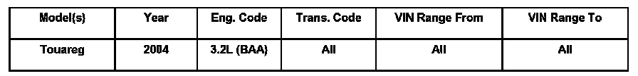
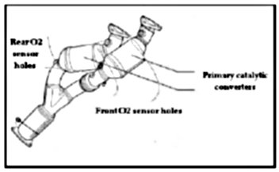
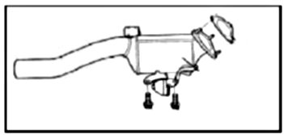

Emissions - MIL ON/DTC's P0420/P0430 Set
ConditionMIL ON, DTC P0420 and/or P0430 Stored in ECM Memory
DTC P0420 Catalyst System Efficiency Below Threshold Bank 1
DTC P0430 Catalyst System Efficiency Below Threshold Bank 2

01 07 08 Jan. 23, 2007 2013789
Technical Background
Improper replacement of secondary catalytic converter.
Production Solution
No production change required.
Service
Primary Catalytic Converters

When diagnosing a vehicle with fault codes P0420 and/or P0430, and the diagnosis reveals that the catalytic converters need replacement, replace only the primary catalytic converters.
Secondary Catalytic Converter

Tip: Under normal circumstances it is only necessary to replace the secondary catalytic converter for noises that are caused by internal defects.
Warranty
Information only.
Required Parts and Tools
No Special Parts required. Always see ETKA for the latest part(s) information.
No Special Tools required.